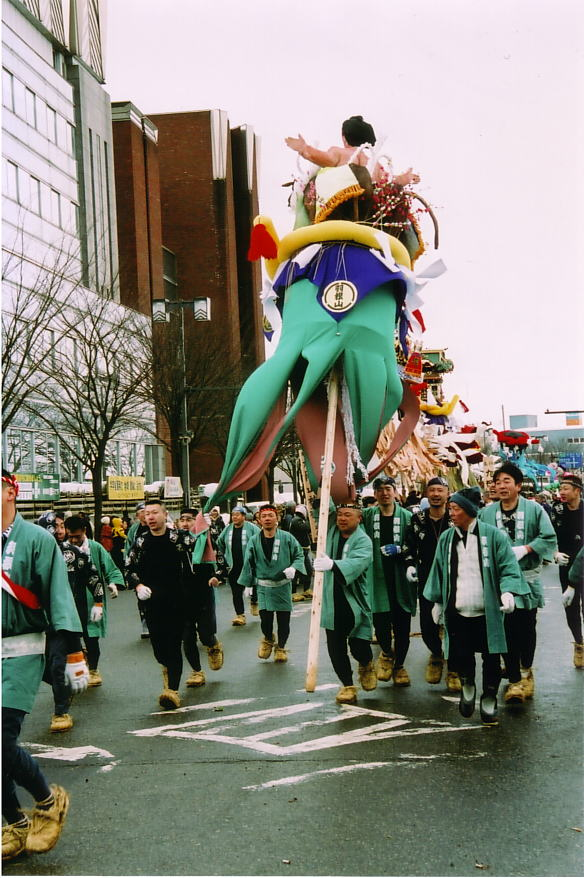

|
市役所前に勢ぞろいしたぼんでん （旭岡山神社に向かって、いざ出陣というところ） |
秋田県横手市の
雪祭り
かまくら・ぼんでん
（クリックしてください）
| モデルかまくら （ふつうのものより少し大きい） |
| 奥に「水神様」の文字が見える。 子供たちは半天を着、手前にわらぐつがある。 これは伝統を再現したものだそうだ。 |
| モデルかまくらを作っているところ （ふつうより大きいので重機を使っている） |
| ミニかまくらを作っているところ （秋平くんの学校・旭小で） |
| ミニかまくらにろうそくを灯した光景 （女の子たちが食べているのはおもちだろうか） |
|
市役所前に勢ぞろいしたぼんでん （旭岡山神社に向かって、いざ出陣というところ） |
|  | |
| １等賞のぼんでん |
半天とおそろいのぼんでん |
| 木（薄い板）を使ったぼんでん |
稲を使ったぼんでん |
◎ 写真はすべて秋平くんのおじいちゃんが撮ってくれたものです。
説明はお母さんのアドバイスによります。
もどる（このページの上に）
左上のブラウザで「戻る」と、もとの作文のところにもどります。